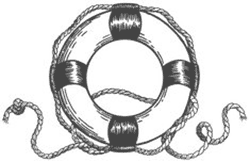
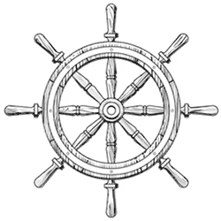

Lessons in Leadership:
Crafting High-Performing Teams
The Rhythm of a Team
Leadership is an intricate dance, where every decision shapes the rhythm of the team. Whether by changing policies, updating procedures, or simply applying the right amount of pressure, finding the right cadence to keep a team in flow is the art of effective leadership.
Through the application of philosophy and psychology, I have earned a reputation for orchestrating high-performing, highly-engaged teams characterized by remarkable cohesion and minimal turnover. The lessons in leadership that follow are honed by real-world experience and reflect a journey marked by successes, setbacks turned into opportunities, and a perpetual cycle of improvement.
Hire Well
Hiring is the most important task a leader undertakes. I've come to view the bond between team members as a sacred, delicate thing, and any change to the makeup of the group can have a profound impact on this synergy, for better or for worse.
The persistent pressure to quickly fill a vacancy can clash with the imperative to select the right candidate, but it's worth taking one's time.
I've found it's not about simply finding someone with the right buzzwords on their resume. While skills hold their merit, they can be gained over time. Character, on the other hand, has a direct impact on an individual’s ability to integrate with the rest of the team. I have come to value collaboration and cooperation over independent contributions.
Skills can always be taught; it's far more difficult to influence personal growth.
Promote Work-Life Balance Through Flexibility
In the contemporary workplace, the traditional notion of basing an employee's value on their attendance is no longer reasonable. It is essential to prioritize execution over mere presence, particularly when dealing with a remote workforce.
Recognizing that employees juggle both personal and professional commitments, a leader should shift their focus from tracking hours to assessing contributions, granting team members the autonomy to manage their schedules according to their unique needs and work styles.
Embracing a philosophy of balance and flexibility is an admission that productivity is not confined to a rigid schedule.
However, with this flexibility comes responsibility. While team members are encouraged to manage their time as they see fit, a leader must remain vigilant for potential abuses of this policy or breaches of contract. Striking the right balance requires a blend of trust and accountability.
The Application of Authority
The authority granted to a leader is a powerful instrument, and how it is wielded shapes the team dynamics and, consequently, its success.
Leadership demands a nuanced approach—the direct exercise of authority should be a measured action, akin to a scalpel in the hands of a skilled surgeon. Wielding power like a cudgel, constantly demanding compliance through the use of brute force, is a surefire way to diminish employee engagement, resulting in an environment where collaboration falters and innovation stagnates.
Instead, it is better to guide the team with respect and understanding, fostering an atmosphere where individuals are empowered to contribute their best. This approach requires an investment of time and energy, as it involves assessing the unique strengths and challenges of each team member. It is a commitment to mentorship and guidance, allowing the team to flourish, rather than diminish under an authoritarian figure.
Leaders also have a pivotal role in managing the stress level within the team. Striking the right balance is essential; too little pressure results in complacency and a lack of progress, while excessive tension leads to burnout and high turnover. Like a fulcrum that can be moved until the right leverage is found, effective leaders understand the importance of finding a level of stress that motivates without being overwhelming. Once found, this baseline, background pressure keeps the team moving forward.
Keep Raising the Bar
Leaders can be a transformative influence on their teams.
Within the realm of psychology, the Pygmalion Effect reveals a profound truth about leadership dynamics. It describes a phenomenon where individuals, when presented with elevated expectations by their leaders, exhibit a remarkable propensity to ascend and meet those expectations.
The Pygmalion Effect, when harnessed effectively, becomes a self-perpetuating cycle of growth. As the team accomplishes their aspirational milestones, their confidence grows, setting them up for future success. The victories become more than just achievements; they become affirmations of the team's capabilities, fostering a culture where the next set of challenges are embraced rather than feared.
It is the alchemy of leadership—a continuous process of transformation where the team, under the influence of positive feedback, not only meets but exceeds their original expectations.
Value Progress Over Statistics
The influx of agile methodologies and associated tools has ushered in an era of data-driven management. Charts, graphs, and metrics paint a vivid picture of a team's activities—burndown charts tracking task completion, velocity charts gauging productivity, lead time charts outlining workflow efficiency, and an array of other visualizations aimed at providing a comprehensive overview.
While these tools offer valuable insights, leaders must not be captivated by the allure of statistics alone. Immersing themselves too deeply in the world of charts, leaders can create a culture that values the perception of success over meaningful progress. For example, a relentless focus on burndown charts can lead to the stagnation of development resources near the end of a sprint as they wait for their stories to be marked complete by Quality Assurance or User Acceptance Testers rather than take on new work.
True leadership goes beyond the confines of statistical analysis. Attending scrum and agile ceremonies becomes not just a formality but a revealing engagement of the team's progress. It sheds light on the challenges faced by individual team members, presenting truths that cannot be captured by any chart.
Leaders must foster an environment where achievements are not reduced to mere data points but are celebrated as part of a broader culture that focuses on tangible progress.
Keep Sprints Negotiable
Sprints are simply time boxes, and should not be treated as rigid constraints. Priorities can shift unexpectedly, so a responsive and customer-centric team must embrace a culture of flexibility.
In emergency situations, strict adherence to a preexisting plan can become a source of friction. Clients, particularly during urgent scenarios, are not amenable to hearing that their pressing concerns can't be addressed until the next sprint (or, worse, until the next program increment).
Remaining open to change does not imply a lack of structure; rather, it underscores a commitment to adaptability. In this spirit, late-breaking requirements introduced mid-sprint should be accommodated, recognizing the need for agility in response to evolving client demands. However, this flexibility comes with a caveat: an equal amount of previously planned work may need to be postponed.
It requires a balance between being responsive and maintaining a realistic workload; a leader must ensure that the team can effectively manage unexpected shifts without compromising the overall project timeline.
Remove Impediments Early
In an agile working environment, the regular sprint-by-sprint cadence moves teams forward at a steady, sustainable pace. This narrow focus on sprints can consume the attention of the team, but effective leadership requires a dual perspective—a simultaneous gaze at the present and a thoughtful look to the horizon.
Impediments such as the breakdown of a developer's machine or an unexpected absence may be forever unavoidable, but astute leaders can anticipate potential obstacles before they impact the team. For instance, if another team's collaboration is crucial for an upcoming sprint, discussions and coordination should commence weeks or even months in advance. If a firewall change is looming, a little foresight prompts the submission of the request well before the relevant sprint begins.
In essence, a leader's role is not only to manage the team's current workload but to also prepare for the future. A leader adept at looking to the horizon instills a forward-thinking culture within the team. This culture doesn't just react to impediments; it anticipates and mitigates them, ensuring that the team continually operates with agility and resilience. In the best-case scenario, the entire team becomes forward-focused, with each member collectively contributing to the sustained success.
Don't be Interesting
Every team desires to have a good reputation. They want to be entrusted with more responsibility, granted more autonomy, and gain renown for getting things done. Unfortunately, in most organizations, it's easier to fall into disfavor with leadership than it is to earn respect.
Reputational risks are inherent in deadlines, whether they are hard or soft. While the team may embrace agility, the broader business environment may not share the same flexibility. These deadlines always receive significant attention when they appear, but there are other, less obvious time limits such as those tied to corporate training, surveys, expense reports, and timesheets, which all demand equal attention. Ensuring the punctual fulfillment of these commitments—big and small—is crucial to avoid team members being perceived as insubordinate.
The release of defects carries obvious reputational consequences, as bad news tends to spread faster—and higher—than good news. If leadership cringes every time the team deploys, it's a clear signal of underlying issues. Ideally, deployments should be frequent, smooth, fast, and stable—so routine that they no longer garner attention and just become a routine part of doing business.
In most cases, a team's reputation is built upon a foundation of consistent, reliable delivery. A track record of quietly and dependably meeting all commitments is the key to fostering a positive perception within an organization.
Wait Before Implementing Change
Leaders are frequently exposed to upcoming plans earlier than individual contributors. Upper management often introduces ideas that may not come to fruition, and when they do, the final outcome may differ from the initial proposal.
In the face of these fluctuations, effective leaders understand the delicate balance between transparency and stability. Change, while inevitable, can be a disruptive force if not managed with care. It is, at the very least, a distraction that can divert the team's focus from their core objectives.
Rather than gossip about any rumored changes, a leader should embody a steady hand on the rudder, maintaining their composure and refraining from premature discussions until the decisions are finalized and the path forward is clear.
Silence during these periods isn't an evasion of responsibility but a strategic choice. It allows the team to concentrate on their work without unnecessary distractions. Constancy in leadership acts as a stabilizing force.
Confidentiality is Key

Trustworthiness stands as a cornerstone of effective leadership. Leaders often find themselves privy to sensitive information, with both the staff and upper management confiding in them about personal problems, financial matters, or simply venting frustrations about other employees. In these instances, the leader's role transforms into that of an active, respectful listener.
Ethics demands that the leader refrain from discussing these matters with anyone else, ensuring the utmost discretion, unless the situation necessitates intervention by Human Resources.
Confidentiality is the bedrock of trust and psychological safety in the workplace, essential elements for cultivating a high-performing team.
Explode Up, Not Out
A team is composed of individuals, each with their own emotions, challenges, and daily frustrations. It's only human for these pressures to occasionally boil over, potentially causing harm to the team's collective reputation.
I consistently advocate for a specific channel to vent such frustrations—directly to me. I emphasize the importance of not conveying hostility towards colleagues, external teams, or, worse, clients. Customer service must come first; political capital is often easier to burn than to gain.
As a leader, I patiently listen to these frustrations then transform them into actionable initiatives. These could manifest through policy changes, strategic plan adjustments, or, when necessary, appropriate escalations to address underlying issues.
By providing a safe and confidential space for the team to express their concerns, a leader not only protects the team's reputation but also turns moments of frustration into opportunities for positive change and growth.
Weeding the Garden: Knowing When To Let Go
The culture of a team is a direct reflection of its leadership.
In an ideal scenario, team members trust one another, take pride in their contributions, and derive genuine enjoyment from their work. Unfortunately, this is not always the case, and there are times when a leader must intervene to address personnel issues. While I acknowledge that everyone may have an occasional bad day, the persistent contribution to a toxic work environment by an individual requires decisive action. In such cases, a leader must implement corrective measures and, if necessary, proactively remove an offending individual for the collective well-being of the team.
Redirect Praise, Accept Blame
When a team succeeds in their goals, it's not uncommon for a leader to receive praise from above. However, integrity demands the recognition that success is the product of collective effort, and it is only right to redirect that praise to the entire team.
Conversely, when faced with setbacks or failures, a leader's role is to shield the team from any external hostility. Instead of pointing fingers at individual team members, the leader must take any blame upon themselves. Adverse situations should trigger a process of introspection and improvement, with leaders channeling their focus towards policy changes and enhancements to the workflow to ensure a better outcome in the future.
Fostering a Culture of Success
Leadership involves not just managing the work, but the intentional creation of an environment where individuals can flourish, innovate, and exceed their own expectations.
Employee satisfaction is at the heart of a thriving workplace, and leadership is about laying the foundation for a culture where every team member feels valued, supported, and inspired. The art of leadership lies in fostering a culture where every individual thrives, and success is simply a way of being.